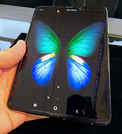

Galaxy FOLD
The Samsung Galaxy Fold (retroactively named the Samsung Galaxy Z Fold) is an Android-based foldable smartphone developed by Samsung Electronics. Unveiled on February 20, 2019, it was released on September 6, 2019 in South Korea. The device is capable of being folded open to expose a 7.3-inch tablet-sized flexible display, while its front contains a smaller "cover" display, intended for accessing the device without opening it.
